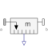

DistanceMeasure the distance between the origins of two frame connectors |

|
Information
This information is part of the Modelica Standard Library maintained by the Modelica Association.
The distance between the origins of frame_a and of frame_b are determined and provided at the output signal connector distance. This distance is always positive. Derivatives of this signal can be easily obtained by connecting the block Modelica.Blocks.Continuous.Der to "distance" (this block performs analytic differentiation of the input signal using the der(…) operator).
In the following figure the animation of a Distance sensor is shown. The light blue coordinate system is frame_a, the dark blue coordinate system is frame_b, and the yellow arrow is the animated sensor.

If the distance is smaller as parameter s_small (in the "advanced" menu), it is approximated such that its derivative is finite for zero distance. Without such an approximation, the derivative would be infinite and a division by zero would occur. The approximation is performed in the following way: If distance > s_small, it is computed as sqrt(r*r) where r is the position vector from the origin of frame_a to the origin of frame_b. If the distance becomes smaller as s_small, the "sqrt()" function is approximated by a second order polynomial, such that the function value and its first derivative are identical for sqrt() and the polynomial at s_small. Furthermore, the polynomial passes through zero. The effect is, that the distance function is continuous and differentiable everywhere. The derivative at zero distance is 3/(2*s_small).
Parameters (1)
| animation |
Value: true Type: Boolean Description: = true, if animation shall be enabled (show arrow) |
|---|
Inputs (3)
| arrowColor |
Default Value: Modelica.Mechanics.MultiBody.Types.Defaults.SensorColor Type: Color Description: Color of relative arrow from frame_a to frame_b |
|---|---|
| specularCoefficient |
Default Value: world.defaultSpecularCoefficient Type: SpecularCoefficient Description: Reflection of ambient light (= 0: light is completely absorbed) |
| s_small |
Default Value: 1e-10 Type: Position (m) Description: Prevent zero-division if distance between frame_a and frame_b is zero |
Connectors (3)
| frame_a |
Type: Frame_a Description: Coordinate system a fixed to the component with one cut-force and cut-torque |
|
|---|---|---|
| frame_b |
Type: Frame_b Description: Coordinate system b fixed to the component with one cut-force and cut-torque |
|
| distance |
Type: RealOutput Description: Distance between the origin of frame_a and the origin of frame_b |